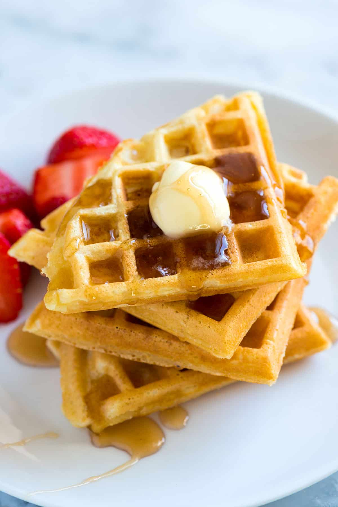

Waffles

These homemade waffles are a weekend staple for my family.
Our recipe makes 4 classic waffles (like in the photos)
or 2 to 3 thick, Belgian waffles.
If you need more, no worries, the recipe is easy to double!
Ingredients
• Flour
• Cornstarch
• Baking Powder
• Sugar
• Salt
• Vanilla
• Oil
• Milk
• Egg
Steps
- Make the batter: In a large bowl, whisk together the flour, cornstarch, salt, baking powder, baking soda, and sugar. In a separate bowl, whisk the buttermilk, oil, and vanilla extract. Whisk the milk mixture into the dry ingredients until only small lumps remain.
- Let the batter rest: Set the batter aside for 10 to 20 minutes while you prepare the waffle iron.
- Preheat waffle iron: Heat the waffle iron to the highest setting.
- Cook them: Brush the iron with melted butter or oil. Pour enough batter to fill the lower grid and cook until they are golden brown and crisp. If they look too dark, turn the heat down slightly
- Serve: Serve them immediately, or keep them warm and crispy on a rack in a 200°F (93°C) oven until you’re ready to serve. Don’t stack them outside the oven, as they will steam and become soft.
Back To Main